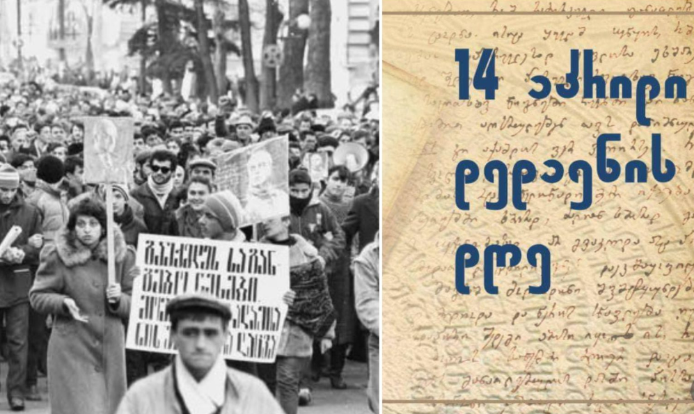

14 აპრილი საქართველოში აღინიშნება როგორც ქართული ენის დღე — ერთ-ერთი მნიშვნელოვანი თარიღი ქვეყნის ისტორიასა და კულტურაში. ეს დღე უკავშირდება 1978 წლის მოვლენებს, როდესაც საბჭოთა კავშირში შემავალ საქართველოში კონსტიტუციაში ცვლილებები იგეგმებოდა. ცვლილებების მიხედვით, ქართული ენა შეიძლებოდა დაეკარგა სახელმწიფო ენის სტატუსი.
ამ გადაწყვეტილებას დიდი წინააღმდეგობა მოჰყვა. 1978 წლის 14 აპრილს ათასობით ადამიანი გამოვიდა რუსთაველის გამზირი-ზე მშვიდობიანი პროტესტით, რათა დაეცვათ ქართული ენის სტატუსი და მნიშვნელობა. მოსახლეობის ერთიანმა და მასშტაბურმა პროტესტმა შედეგი გამოიღო — ხელისუფლებამ დათმო და ქართული ენა კვლავ დარჩა საქართველოს სახელმწიფო ენად.
დღეს 14 აპრილი საქართველოში აღინიშნება სხვადასხვა კულტურული ღონისძიებით — ტარდება ლიტერატურული საღამოები, საჯარო ლექციები, სკოლის ღონისძიებები და აქციები, რომლებიც ენის მნიშვნელობას უსვამს ხაზს. მოკლედ, 14 აპრილი არა მხოლოდ ენის დაცვის დღეა, არამედ სიმბოლოა ერთიანობის, თვითმყოფადობისა და კულტურული მემკვიდრეობის დაცვის.